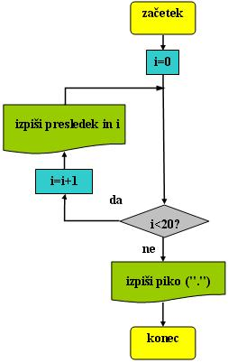
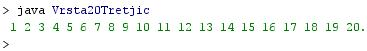

- Programski jeziki omogoèajo sledeèe:
- doloèanje in opisovanje podatkov
- doloèanje in opisovanje operacij, ki jih raèunalnik samodejno izvaja nad podatki
- doloèanje in opisovanje transformacij, ki jih raèunalnik samodejno izvaja nad podatki
- Programer uporabi pri programiranju ukaze.
- Ukazi predstavljajo operacije, ki jih želimo med izvajanjem programa izvesti.
- Programski jeziki se razlikujejo od naèinov sporazumevanja med ljudmi v tem, da zahtevajo veliko veèjo stopnjo natanènosti, nedvoumnosti, sklenjenosti in doloèenosti.
- Ljudje se lahko v pogovorih med seboj vèasih izrazijo tudi nedvoumno, nenatanèno ali celo povsem napaèno, pa jih bodo sogovorci vendarle lahko pravilno razumeli.
- Poslušalec (èlovek) vendarle lahko pravilno razume tudi dvoumna in nenatanèna sporoèila.
- Raèunalniki in stroji pa sporoèila razumejo in izvedejo natanko tako, kot so bila podana in naredijo natanko to, kar jim naroèimo.
- Sogovorci (ljudje) nas (lahko, a ne vedno) razumejo tudi, èe smo dvoumni ali nenatanèni pri sporoèanju, saj lahko uganejo, kaj smo mislili.
- Raèunalniki in stroji nikoli ne uganejo, kaj smo mislili, paè pa vedno naredijo tisto, kar jim naroèimo.
- Èe smo pri sporoèanju raèunalnikom in strojem nenatanèni ali dvoumni, preprosto ne bodo delovali ali pa bodo delovali na napaèen naèin.
- Nikoli pa ne bodo uganili, kaj smo pravzaprav mi želeli, da izvedejo.
- Ljudje so zasnovali že veliko razliènih programskih jezikov, da bi zadostili vedno novim potrebam.
- Potreba po veè razliènih programskih jazikih obstaja in ostaja zaradi velike razliènosti podroèij znanja in dejavnosti, na katerih te jezike uporabljamo.
- Razlogi za obstoj razliènih programskih jezikov:
- Obseg programov je zelo razlièen. Najmanjši program, ki ga napiše posameznik za zabavo, lahko obsega nekaj vrstic. Veliki sistemi, pri katerih sodelujejo stotine poklicnih programerjev, so lahko res ogromni, denimo operacijski sistemi.
- Stopnja usposobljenosti programerja. Zaèetnikom bolj ustreza enostavnos tin preglednost, poklicni strokovnjaki pa morajo obvladovati veliko zapletenost in kompleksnost programov.
- V programih morajo biti pravilno uravnotežene njihova velikost, hitrost njihovega delovanja in enostavnost oziroma zapletenost glede na zmogljivosti raèunalnika, ki lahko obsegajo vse od mikrokontrolerjev do superraèunalnikov.
- Nekateri programi odtajajo nespremenjeni tudi veè generacij, nekatere pa neprestano prenavljajo in posodabljajo.
- Programerji se med seboj razlikujejo tudi v okusih, nagnjenjih in v naèinu razmišljanja ter obravnave problemov.
- Primer:
- Besedni opis problema in rešitve.
- "Zapiši po vrsti števila od 1 do 20 v isti vrsti, med njimi pa naj bo en presledek": Vprašamo se, kaj vse bomo morali postoriti za rešitev problema in to opišemo v nekaj stavkih. Potek reševanja problema poskusimo premisliti èim bolj natanèno.
- Ker gre za ponavljanje, bomo izbrali zanko.
- Zaèetna vrednost števca zanke je 0.
- Èe je števec manjši od 20, poveèaj števec za 1 ter izpiši presledek in vrednost števca.
- Èe števec ni manjši od 20, prekini zanko in izpiši še piko.
- "Zapiši po vrsti števila od 1 do 20 v isti vrsti, med njimi pa naj bo en presledek": Vprašamo se, kaj vse bomo morali postoriti za rešitev problema in to opišemo v nekaj stavkih. Potek reševanja problema poskusimo premisliti èim bolj natanèno.
- Diagram poteka
- "Zapiši po vrsti števila od 1 do 20 v isti vrsti, med njimi pa naj bo en presledek": 
- V okolju za pisanje izvorne kode v jeziku Java, za prevajanje in za interaktivno delo zapiši zgornji program "Vrsta20Tretjic". Pomagaj si s sliko.

- Kodo lahko tudi kopiraš iz te datoteke in jo prilepiš v okolje, v katerem pišeš programèke. Pozor: koda, ki jo boš kopiral/a, vsebuje eno, dve, tri ali štiri napake. Èe želiš, da bo program deloval, moraš napake odkriti in jih odpraviti.
- Izvorno kodo shrani pod imenom "ImePriimek39.java". ImePriimek je seveda tvoje lastno ime in priimek.
- Datoteko "ImePriimek39.java" prevedi.
- Prevedeno datoteko zaženi, preveri rezultat v interaktivnem oknu in poklièi profesorja, da vidi rezultat.
- Preriši diagram poteka v tej uèni enoti v zvezek.
1. Zapiši tri opravila, ki jih omogoèajo programski jeziki.
2. V èem se programski jeziki bistveno razlikujejo od jezikov, ki jih ljudje uporabljajo za medsebojno sporazumevanje?
3. Zakaj morajo biti navodila raèunalniku in stroju vedno brez izjeme nedvoumna in natanèna?
4. Naštej pet razlogov za obstoj razliènih programskih jezikov.
5. Katero zanko smo uporabili v primeru te uène enote?
6. Kaj je števec zanke in kako je oznaèen v primeru te uène enote?
7. Koliko simbolov za izpis vsebuje diagram poteka primera v tej uèni enoti?
8. Koliko simbolov za aritmetiène operacije vsebuje diagram poteka primera v tej uèni enoti?
9. Zapiši pogoj, ki ga preverjamo pri izvajanju zanke v primeru te uène enote.
10. Kako se imenuje simbol v diagramu poteka te uène enote, v katerem je zapisan pogoj za izvajanje zanke?
2. Zapiši od ene do pet kljuènih besed, ki povzemajo vsebino te uène enote.
3. Povezave do dodatnih informacij.
Angleška verzija Wikipedije.
Spletni priroènik proizvajalca programskega okolja Java. To je podjetje Sun.